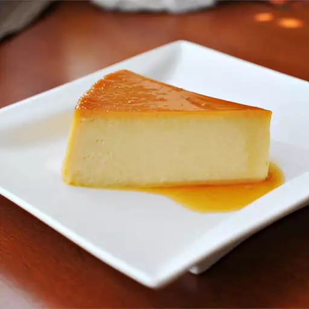

Flan

Description
"Flan" can refer to a couple different things depending on where you live.
In this case, it's a baked custard dessert topped with caramel.
The Spanish dessert is similar to the French crème caramel.
Ingredients
- 1 cup whiteSugar
- 3 large eggs
- 1 (14 ounce) can sweetened condensed milk
- 1 (12 fluid ounce) can evaporated Milk
- 1 tablespoon vanilla extract
Steps
-
Preheat the oven to 350 degrees F (175 degrees C).
-
Melt sugar in a medium saucepan over medium-low heat until liquefied and golden in color.
Carefully pour hot syrup into a 9-inch round glass baking dish, turning the dish to evenly coat the bottom and sides; set aside.
-
Beat eggs in a large bowl.
Add condensed milk, evaporated milk, and vanilla; beat until smooth.
Pour egg mixture into the baking dish; cover with aluminum foil.
-
Bake in preheated oven for 1 hour. Let cool completely.
-
To serve, carefully invert onto a rimmed serving plate; let caramel sauce flow over flan.